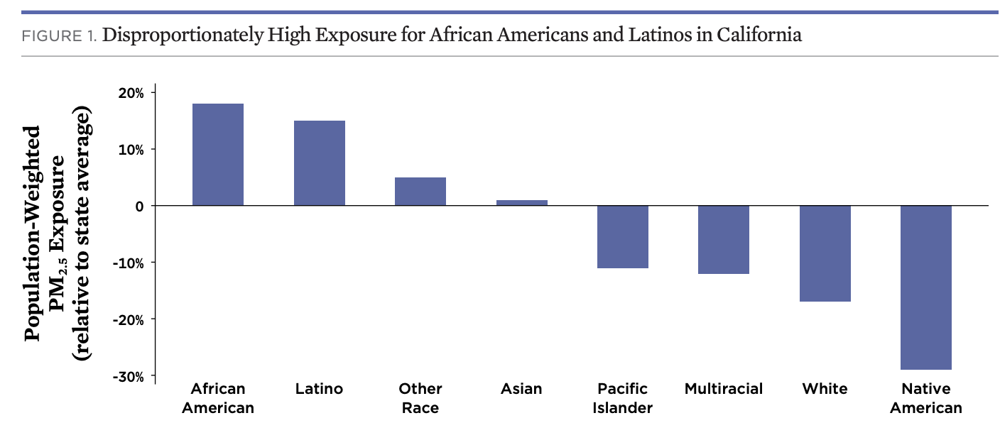

Working with UC Berkeley English Prof. Bryan Wagner, the UCB D-Lab, D-Lab staff, and a team of students, I participated in the development of a web site to share historical data about two slave conspiracies that occurred in 1791 & 1705. Specifically, I used historical documents and maps along with geospatial and text analysis methods and tools to create a spatial database of conspiracy locations mentioned in the legal testimonies which was published in Enslaved: the Journal of Slavery and Data Preservation.
Working with Dr. Julia Lane of the Coleridge Initiative, Dr. Claudia von Vacano and the D-Lab, and members of the CA Departments of Health and Human Services, Education, and Employment, I managed the D-Lab team's participation in the California Applied Data Analytics Training Program. This program provided data science trainging to state researchers who used R and SQL to explore, analyze and visualize restricted use data sets in a highly secure online data anlaytics enclave.
For this project, I worked with Prof. Irene Bloemraad and Dr. Jasmijn Slootjes of the Berkeley Interdisciplinary Migration Initiative (BIMI) to develop a service database and R Shiny web mapping tool that allows the public to explore gaps in access to health and legal services in California.

In this collaboration with Prof. Karen Chapple of the UCB Department of City and Regional Planning, Dr. Claudia von Vacano and the D-Lab, and the Chan-Zuckerberg Initiative, I was the curriculum lead for an innovative data science training program aimed at enabling professional planners to incorporate data science tools and methods in their existing workflows.
As the D-Lab lead on this project under the direction of Berkeley Law Professor Katerina Linos, we used official reports and data published by the United Nations High Commission for Refugees (UNHCR) and the European Union (EU) combined with an analysis of over 10,900 public social media posts as well as over 6,000 in-person interviews conducted across Greek refugee settlements by the NGO Internews. I was the architect of the project website in which we summarized these data using interactive maps and plots through which viewers can compare asylum seekers’ hopes and concerns with official reports and also explore Greek camp conditions.
For this small project I worked with Dr. Joan Casey to develop an interactive web map to visualize the findings of her research on spatial variation in noise exposure in the contiguous United States. For me it was a geospatial data engineering challenge to create a map based on such a geographically large and detailed dataset using free tools and the github pages platform.

As a D-Lab data scientist I worked with my colleague Dr. Jon Stiles and Dr. David Reichmuth of the Union of Concerned Scientists to preform a spatial analysis of the social equity issues and the potential air quality impacts of electric vehicles. The analysis explores the significant contributions of cars, trucks, and buses to particulate matter air pollution in California and the disproportionate effects on communities of color and low income communities.
For this project, I worked with Cornerstone Research to analyze the frequency of traffic stops across different racial groups, and assess whether roadblocks in Madison County were implemented more frequently in neighborhoods that are predominantly African-American. This work was used by Simpson Thacher in their successful pro bono case representing the citizens of Madison County, Mississippi in a class action lawsuit against the county’s Sheriff’s Department.
I partnered with my D-Lab colleague Dr. Jon Stiles and data scientists at the College Futures Foundation to visualize the high school to bachelors degree pipeline in California, focusing on public schools and colleges.
As a senior GIS Technology Specialist with the San Francisco Estuary Institute I designed and developed custom web-based mapping applications and spatial analysis tools to engage a diverse group of stakeholders and the general public in data about California aquatic ecosystems.